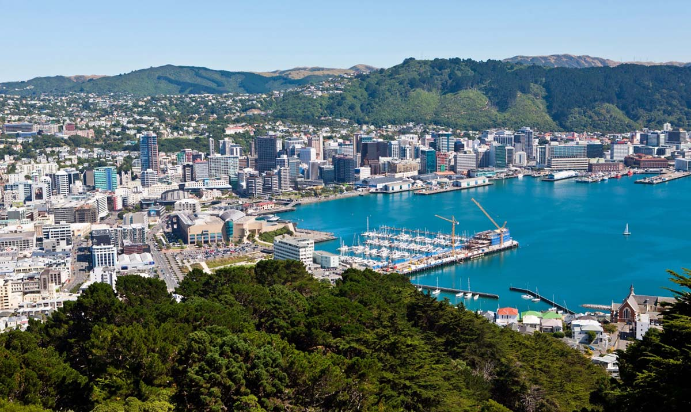

Where to New Zealand ?
New Zealand offers a rich and unique cultural experience that blends Māori traditions with European influences. The Māori, the indigenous people of New Zealand, have a vibrant culture, with their language, art, and customs deeply woven into the fabric of everyday life.For anyone interested in discovering a diverse and thriving culture, New Zealand offers the perfect blend of history, art, traditions, and modern life—all set against some of the most beautiful landscapes on Earth. Whether you're learning about Māori customs, exploring vibrant cities, or mingling with the locals, New Zealand promises a truly memorable cultural experience.
Breathtaking Natural Beauty
New Zealand is home to some of the most stunning landscapes in the world. From the snow-capped mountains of the Southern Alps to the lush green forests and crystal-clear lakes, the country's scenery is simply jaw-dropping. Highlights include:
- The majestic Fiordland National Park
- The famous Milford Sound
- The geothermal wonders of Rotorua
- The serene beauty of Lake Tekapo
Adventure Awaits
If you're an adventure seeker, New Zealand is the place to be. Whether you're into skydiving, bungee jumping, hiking, or skiing, New Zealand offers endless outdoor activities. Notable adventures include:
- Bungee jumping in Queenstown
- Hiking the famous Tongariro Alpine Crossing
- Skiing on the slopes of Mount Ruapehu
- Exploring the Waitomo Caves with glowworms
Unique Culture
New Zealand has a rich and diverse culture influenced by both its Māori heritage and British colonial history. You'll find incredible art, music, and traditions that are unique to the country. Don't miss out on:
- Learning about the Māori culture through haka performances
- Exploring the Waitangi Treaty Grounds
- Sampling delicious local cuisine such as hangi (traditional Māori feast)
Wildlife and Nature
New Zealand is home to some unique wildlife, including the famous kiwi bird and rare species like the yellow-eyed penguin and kea parrot. A visit to New Zealand offers opportunities to connect with nature like nowhere else.
Friendly Locals
The people of New Zealand, known as Kiwis, are known for their hospitality and friendliness. You'll feel welcome wherever you go, whether you're in bustling cities like Auckland and Wellington or remote towns in the countryside.
Rich Film History
Fans of The Lord of the Rings and The Hobbit will be in paradise. New Zealand served as the filming location for both iconic trilogies. Explore famous movie sets like Hobbiton in Matamata and Tongariro National Park, which served as the setting for Mount Doom.